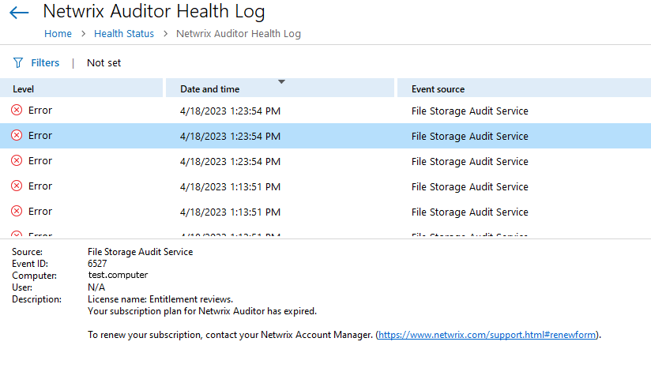

Symptom
Either Netwrix Auditor Health Logs or Event Viewer logs contain multiple Event ID 6527
errors:
Event ID: 6527 License name: Entitlement reviews. Your subscription plan for Netwrix Auditor has expired.

Cause
Netwrix Auditor Access Reviews license has expired with Access Reviews collectors still
set up for data collection.
Resolution
- Run the Access review configuration tool — refer to the following article for information on the location: Set Up the Access Reviews Configuration Tool.
- Uncheck all the sources checkboxes, click Save and close the application.
In case you receive an error message:
Netwrix Auditor Access Reviews is no longer installed.Click OK to proceed to the configuration tool.